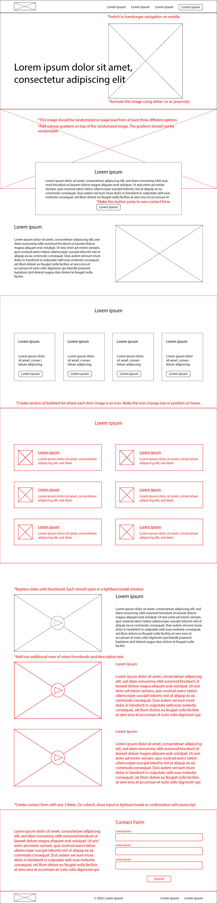

Final Project
Now that you have practiced working with dynamic content, interactive content, and have completed your midterm projects and beyond, you are now ready to tackle the final project. This project will be a chance to continue to apply what you have learned so far in a real world example. As with the midterm project, it should make a great case study/portfolio project to showcase your development knowledge and ability to work within a preexisting system. However, the biggest change this time around is that rather than working with your original midterm project as a starting point, you will be handing off your code to a random classmate. Another classmate has been randomly selected to hand off their midterm project codebase to you. Please review these reassignments below.
| Previous Dev | New Dev | Contact |
|---|---|---|
| Charity Chong | Leanna Wu | liangwu2@asu.edu |
| Katherine Giedraitis | Milos Zekanovic | mzekanov@asu.edu |
| Nghi Tran | Katherine Giedraitis | kgiedrai@asu.edu |
| Emily Van Camp | Tanya Yan | tyan10@asu.edu |
| Burke Wald | Emily Van Camp | evancamp@asu.edu |
| Connor Wodynski | Nghi Tran | ndtran3@asu.edu |
| Leanna Wu | Burke Wald | bwald@asu.edu |
| Tanya Yan | Charity Chong | cchong3@asu.edu |
| Milos Zekanovic | Connor Wodynski | cwodynsk@asu.edu |
Instructions
As before, you will find a list of technical requirements below. You will also find revisions and new requests added to the low fidelity wireframe. It is your assignment to do the following:
- Update your README.md file with information about how your site was built. Also be sure there are comments around any particular complicated blocks of code. This will help the new developer, just as the previous developer of your project is aiming to help you.
- If there are any tasks you did not complete from the midterm, please add comments surrounding your code containing the following:
*** UNFINISHED CODE ***. New developers will not be held responsible for completing unfinished components from the previous developers. - Request git access to your new project from the previous developer so you can make a fork of their code. It is important that when you pull their code, you create a space on your account to push to rather than continuing to work in their original repo.
- Analyze the wireframe for additional requests or edits to existing features. Break down newly requested edits into reasonable, repeatable atomic design components.
- Rather than creating these modules in greyscale, do your best to fit new components into the existing design system in terms of both sctructure and style.
- Create JavaScript solutions for any new interactions not possible with pure HTML/CSS
- Follow steps for project submission found below.
Technical Requirements
Technical requirements will laregely remain the same as they were for the midterm. Only new requirements are listed below:
- Continue to use whichever css methodology was implimented by your previous developer. The project should not use more than one css methodology.
- Confirm that any javascript interactions are consistent across all current major browsers: Chrome, Firefox, Safari, Edge.
- Please update the readme file for your project as necessary. This should specify the source of any javascript solution you find online for reference.
Wireframe
Please use this wireframe as a structural reference. New components and notes are in red.
Instructions for Submission
- Create either a new repo or a new directory within your existing repository with the name
final-project. - Fork or clone the midterm project from your previous developer into this repo or directory and continue to edit from there.
- Once you have completed all necessary edits, email me to let me know your work is ready for review.
If you have any questions about this process, please let me know.